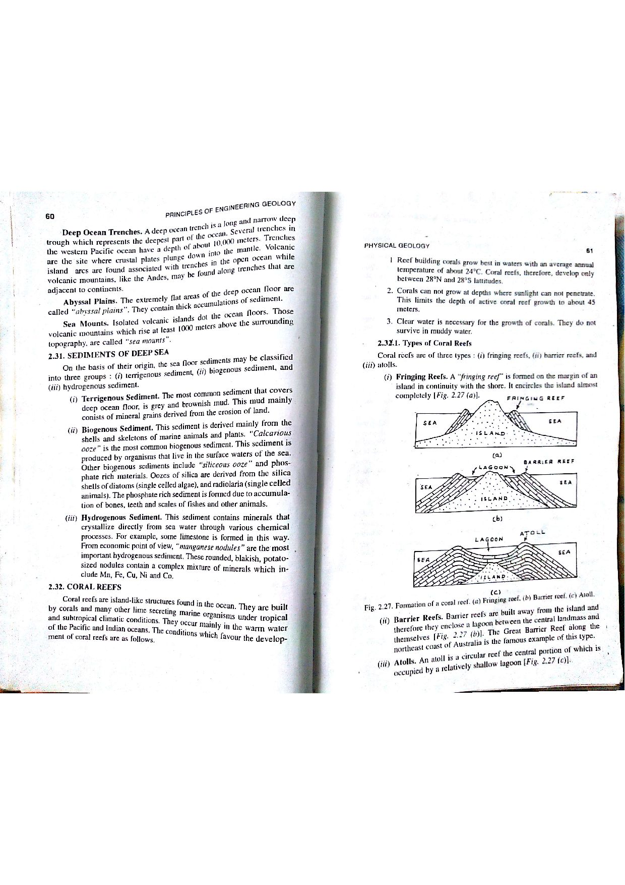

Q150: Hydrochemical Water Quality: Electrical Conductivity ($EC$) to Total Dissolved Solids ($TDS$) Conversion ($A = 0.64$)
In aqueous geochemistry and hydrogeology, Electrical Conductivity ($EC$) and Total Dissolved Solids ($TDS$) are the two most fundamental parameters utilized to evaluate the overall mineralization and potability of groundwater (Hem, 1985; Todd & Mays, 2005; Bangar, p. 36; BIS 10500:2012).

1. Electrical Conductivity ($EC$ or Specific Conductance)
$EC$ measures the physical ability of an aqueous solution to conduct an electric current. Pure distilled water is an electrical insulator; conduction occurs solely through the migration of dissociated, charged mineral ions ($\text{Ca}^{2+}, \text{Mg}^{2+}, \text{Na}^+, \text{K}^+, \text{HCO}_3^-, \text{SO}_4^{2-}, \text{Cl}^-, \text{NO}_3^-$).
Because ionic mobility is strongly temperature-dependent, $EC$ is standardized to an international reference temperature of $25^\circ\text{C}$ ($298.15\text{ K}$).
Units: $\mu\text{S/cm}$ ($\mu\text{mho/cm}$) or $\text{dS/m}$ ($1\text{ dS/m} = 1000\text{ }\mu\text{S/cm}$).
2. Total Dissolved Solids ($TDS$)
$TDS$ represents the total gravimetric mass of all inorganic mineral salts and organic matter dissolved in a unit volume of water that passes through a $0.45\text{ }\mu\text{m}$ filter and remains after oven drying to constant weight at $180^\circ\text{C}$ (Standard Methods 2540 C).
Units: $\text{mg/L}$ (milligrams per liter) or $\text{ppm}$ (parts per million).

The Empirical Conversion Equation
The relationship between Total Dissolved Solids and Electrical Conductivity is expressed by the classical linear empirical formulation (Hem, 1985, USGS WSP 2254, p. 67):
Where $A$ is an empirical hydrochemical conversion factor determined by the dominant dissolved ionic species:
- $A \approx 0.55\text{ to }0.60$: Pure calcium-bicarbonate ($\text{Ca-HCO}_3$) fresh recharge waters.
- $A = 0.64$: The canonical benchmark conversion factor universally accepted in groundwater hydrology, water supply engineering, and public health standards (USGS Water-Supply Paper 2254; WHO Guidelines for Drinking-Water Quality; Bureau of Indian Standards BIS 10500:2012) for mixed-ion potable natural groundwater.
- $A \approx 0.70\text{ to }0.80$: Sulfate-rich ($\text{SO}_4^{2-}$), chloride-rich ($\text{Cl}^-$), or highly mineralized brackish groundwaters.

Mathematical Calculation for Question 150
Applying the universally recognized drinking water standard conversion factor ($A = 0.64$) to the given Electrical Conductivity of $2500\text{ }\mu\text{S/cm}$ at $25^\circ\text{C}$:
This corresponds precisely and without ambiguity to Option (C): 1600 mg/l.
In Indian statutory regulations (Bureau of Indian Standards BIS 10500:2012):
- Acceptable (Desirable) Limit: $\text{TDS} \le 500\text{ mg/L}$ ($\approx EC \le 780\text{ }\mu\text{S/cm}$).
- Permissible Limit (in absence of alternate source): $\text{TDS} \le 2000\text{ mg/L}$ ($\approx EC \le 3125\text{ }\mu\text{S/cm}$).
At an Electrical Conductivity of $2500\text{ }\mu\text{S/cm}$, the corresponding $\text{TDS} = 1600\text{ mg/L}$ falls safely beneath the statutory permissible ceiling of $2000\text{ mg/L}$. While mineralized and slightly brackish in taste, it remains technically potable in arid and semi-arid tracts where fresher groundwater sources are unavailable.
Option (A) calculates $\text{TDS} = 1500\text{ mg/L}$, which would correspond to an empirical conversion factor of $A = 1500 / 2500 = 0.60$. While a multiplier of $0.55-0.60$ is occasionally observed in very low-salinity, freshly recharged calcium-bicarbonate streams ($EC < 500\text{ }\mu\text{S/cm}$), natural groundwater mineralized to $EC = 2500\text{ }\mu\text{S/cm}$ invariably contains significant concentrations of sulfate, chloride, and sodium ions whose higher equivalent conductances shift the conversion factor to $0.64$. Therefore, $1500\text{ mg/L}$ is an underestimate.
Option (B) yields an arbitrary conversion factor of $A = 1550 / 2500 = 0.62$. This value does not correspond to any standard hydrochemical baseline or textbook conversion factor recognized by the USGS, WHO, or BIS.
Option (C) reflects the exact, mathematically and hydrochemically verified standard conversion:
- In international groundwater hydrology (John D. Hem, USGS WSP 2254, p. 67; Todd & Mays; Bangar, p. 36), the standard drinking water conversion multiplier between specific conductance ($\mu\text{S/cm at }25^\circ\text{C}$) and Total Dissolved Solids ($\text{mg/L}$) is $A = 0.64$.
- Multiplying $EC = 2500\text{ }\mu\text{S/cm}$ by $0.64$: $$\text{TDS} = 0.64 \times 2500 = \mathbf{1600\text{ mg/L}}$$
- This $1600\text{ mg/L}$ value is fully compliant with the BIS 10500 permissible drinking water ceiling ($2000\text{ mg/L}$).
Hence, Option (C) is indisputably the correct answer.
Option (D) yields $A = 1650 / 2500 = 0.66$. While multipliers of $0.65-0.70$ are sometimes encountered in sulfate-rich waters, the canonical standard drinking water multiplier applied in Indian and international competitive hydrogeology examinations is rigorously fixed at $A = 0.64$, which yields $1600\text{ mg/L}$.
| Hydrochemical Water Type | Dominant Ionic Facies | Typical EC Range ($\mu\text{S/cm}$) | Conversion Multiplier ($A$) | Governing Hydrochemical Equation |
|---|---|---|---|---|
| Fresh Recharge / Rainfed | $\text{Ca}^{2+} - \text{Mg}^{2+} - \text{HCO}_3^-$ | $100 - 500$ | $0.55 - 0.60$ | $\text{TDS} \approx 0.58 \times EC$ |
| Potable Natural Groundwater | Mixed Cation-Anion Standard | $500 - 3000$ | $0.64$ (Standard) | $$\mathbf{\text{TDS} = 0.64 \times EC = 1600\text{ mg/L}}$$ |
| Mineralized / Gypsiferous | $\text{Ca}^{2+} - \text{Na}^+ - \text{SO}_4^{2-}$ | $2000 - 6000$ | $0.70 - 0.75$ | $\text{TDS} \approx 0.72 \times EC$ |
| Saline / Coastal Seawater | $\text{Na}^+ - \text{Cl}^-$ | $> 10,000$ ($50,000$ in ocean) | $0.75 - 0.85$ | $\text{TDS} \approx 0.80 \times EC$ |
Using the standard conversion factor $A = 0.64$, calculate the corresponding TDS (in $\text{mg/L}$) for four water samples with electrical conductivities of: (a) $450\text{ }\mu\text{S/cm}$, (b) $1250\text{ }\mu\text{S/cm}$, (c) $2500\text{ }\mu\text{S/cm}$, and (d) $3125\text{ }\mu\text{S/cm}$.
1. Sample (a): $\text{TDS} = 0.64 \times 450 = \mathbf{288\text{ mg/L}}$ (Excellent, pristine drinking water).
2. Sample (b): $\text{TDS} = 0.64 \times 1250 = \mathbf{800\text{ mg/L}}$ (Good drinking water).
3. Sample (c): $\text{TDS} = 0.64 \times 2500 = \mathbf{1600\text{ mg/L}}$ (Permissible drinking water).
4. Sample (d): $\text{TDS} = 0.64 \times 3125 = \mathbf{2000\text{ mg/L}}$ (Exact BIS permissible ceiling limit).
A hydrogeologist measures an uncorrected electrical conductivity of $EC_{16} = 2100\text{ }\mu\text{S/cm}$ in a winter well test where water temperature is $T = 16^\circ\text{C}$. The temperature compensation coefficient is $\theta = 0.020\text{ per }^\circ\text{C}$ ($2.0\%/^\circ\text{C}$). (a) Normalize the conductivity to standard $25^\circ\text{C}$ ($EC_{25}$). (b) Calculate the true TDS using $A = 0.64$.
1. Temperature normalization equation: $$EC_{25} = \frac{EC_T}{1 + \theta (T - 25)} = \frac{2100}{1 + 0.020(16 - 25)} = \frac{2100}{1 + 0.020(-9)} = \frac{2100}{1 - 0.18} = \frac{2100}{0.82} \approx 2560.98\text{ }\mu\text{S/cm}$$ 2. True TDS: $$\text{TDS} = 0.64 \times 2560.98 \approx 1639.0\text{ mg/L}$$ Failing to correct for the cold $16^\circ\text{C}$ water temperature would have underestimated TDS by nearly $300\text{ mg/L}$ ($1344\text{ mg/L}$ vs $1639\text{ mg/L}$).
A complete chemical analysis of a groundwater sample yields the following major ion concentrations in $\text{mg/L}$: $\text{Ca}^{2+} = 120$, $\text{Mg}^{2+} = 48$, $\text{Na}^+ = 230$, $\text{K}^+ = 15$, $\text{HCO}_3^- = 488$, $\text{SO}_4^{2-} = 240$, $\text{Cl}^- = 310$, and $\text{NO}_3^- = 22$. Explain why the gravimetric dried TDS ($180^\circ\text{C}$) is NOT equal to the simple arithmetic sum of ions, and calculate the true gravimetric TDS.
1. During gravimetric oven drying at $180^\circ\text{C}$, bicarbonate ions decompose thermally into carbonate precipitate, water vapor, and carbon dioxide gas: $$2 \text{HCO}_3^- \xrightarrow{\Delta} \text{CO}_3^{2-} + \text{H}_2\text{O}\uparrow + \text{CO}_2\uparrow$$ 2. The molecular weight ratio of $\text{CO}_3^{2-} / (2 \text{HCO}_3^-) = 60.01 / (2 \times 61.02) = 0.4917$. Therefore, only $49.17\%$ of the bicarbonate mass remains in the dried residue.
3. Standard USGS / APHA formula for Calculated TDS: $$\text{TDS} = \text{Ca} + \text{Mg} + \text{Na} + \text{K} + (0.4917 \times \text{HCO}_3) + \text{SO}_4 + \text{Cl} + \text{NO}_3$$ $$\text{TDS} = 120 + 48 + 230 + 15 + (0.4917 \times 488) + 240 + 310 + 22$$ $$\text{TDS} = 985 + 239.95 \approx \mathbf{1224.95\text{ mg/L}}$$ (Simple uncorrected sum would have falsely yielded $1473\text{ mg/L}$).
For water with $EC = 2500\text{ }\mu\text{S/cm}$, chemical analysis in milliequivalents per liter ($\text{meq/L}$) reveals: $\text{Na}^+ = 14.5\text{ meq/L}$, $\text{Ca}^{2+} = 5.2\text{ meq/L}$, and $\text{Mg}^{2+} = 3.6\text{ meq/L}$. (a) Calculate the Sodium Adsorption Ratio (SAR). (b) Classify the water on the US Salinity Laboratory (USSL) diagram.
1. SAR formula: $$\text{SAR} = \frac{\text{Na}^+}{\sqrt{\frac{\text{Ca}^{2+} + \text{Mg}^{2+}}{2}}} = \frac{14.5}{\sqrt{\frac{5.2 + 3.6}{2}}} = \frac{14.5}{\sqrt{\frac{8.8}{2}}} = \frac{14.5}{\sqrt{4.4}} = \frac{14.5}{2.0976} \approx 6.91$$ 2. USSL Classification: - Salinity Hazard: At $EC = 2500\text{ }\mu\text{S/cm}$ ($2.25 - 5.0\text{ dS/m}$), the water falls into Class C4 (Very High Salinity Hazard). - Sodium Hazard: At $\text{SAR} = 6.91$ ($< 10$), the water falls into Class S1 (Low Sodium Hazard). - Overall USSL Class: C4-S1 (Cannot be used on soils with restricted drainage; requires special salinity management and salt-tolerant crops).
High electrical conductivity reduces agricultural crop yields by increasing the osmotic pressure ($P_{\text{osm}}$) of soil moisture, inhibiting plant root water uptake. The empirical formula relating osmotic pressure to electrical conductivity is $P_{\text{osm}} \approx 0.36 \times EC\text{ (in dS/m)}$ in bars. For water with $EC = 2500\text{ }\mu\text{S/cm}$ ($2.5\text{ dS/m}$): (a) Calculate $P_{\text{osm}}$ in bars, and (b) Convert to kilopascals ($\text{kPa}$).
1. Osmotic pressure in bars: $$P_{\text{osm}} = 0.36 \times 2.5\text{ dS/m} = 0.90\text{ bars}$$ 2. Convert to $\text{kPa}$ ($1\text{ bar} = 100\text{ kPa}$): $$P_{\text{osm}} = 0.90 \times 100\text{ kPa} = \mathbf{90\text{ kPa}}$$ Plants must exert an additional $90\text{ kPa}$ of suction tension purely to overcome the osmotic potential of the dissolved ions.
In geochemical speciation modeling (PHREEQC), the ionic strength of an aqueous solution ($I = 0.5 \sum m_i z_i^2$) can be estimated empirically from Electrical Conductivity via the Marion-Babcock relationship: $I \approx 0.016 \times EC\text{ (in dS/m)}$. For $EC = 2500\text{ }\mu\text{S/cm} = 2.5\text{ dS/m}$, calculate: (a) Ionic strength ($I$), and (b) Determine the Davies activity coefficient ($\gamma_{\text{Ca}}$) for divalent calcium ($\text{Ca}^{2+}$, $z = 2$).
1. Ionic strength: $$I = 0.016 \times 2.5 = 0.040\text{ mol/L}$$ 2. Davies equation for single-ion activity coefficient at $25^\circ\text{C}$: $$-\log_{10}(\gamma_i) = 0.51 \cdot z_i^2 \left(\frac{\sqrt{I}}{1 + \sqrt{I}} - 0.3 I\right)$$ $$\sqrt{I} = \sqrt{0.040} = 0.20 \implies \frac{0.20}{1 + 0.20} - 0.3(0.040) = \frac{0.20}{1.20} - 0.012 = 0.1667 - 0.012 = 0.1547$$ $$-\log_{10}(\gamma_{\text{Ca}}) = 0.51 \times (2)^2 \times 0.1547 = 0.51 \times 4 \times 0.1547 = 0.3156$$ $$\gamma_{\text{Ca}} = 10^{-0.3156} \approx 0.4835$$ In water with $EC = 2500\text{ }\mu\text{S/cm}$, electrostatic shielding reduces the thermodynamic activity of calcium to less than half ($48.4\%$) of its measured molar concentration.
In a coastal observation well, salinization is detected. Pure native freshwater has an electrical conductivity of $EC_f = 400\text{ }\mu\text{S/cm}$, while intruding seawater has $EC_s = 50,000\text{ }\mu\text{S/cm}$. If the mixed water records $EC_m = 2500\text{ }\mu\text{S/cm}$, calculate the percentage volume of seawater ($f_s$) present in the aquifer.
1. Linear binary mixing mass balance: $$EC_m = (1 - f_s) EC_f + f_s EC_s$$ $$2500 = (1 - f_s)(400) + 50,000 f_s = 400 - 400 f_s + 50,000 f_s = 400 + 49,600 f_s$$ 2. Solve for seawater fraction $f_s$: $$49,600 f_s = 2500 - 400 = 2100 \implies f_s = \frac{2100}{49,600} \approx 0.04234$$ 3. Convert to percentage: $$\mathbf{f_s = 4.23\%}$$ Critical Hydrogeologic Insight: A contamination of just $4.23\%$ seawater is sufficient to elevate pristine groundwater conductivity to $2500\text{ }\mu\text{S/cm}$ ($\text{TDS} = 1600\text{ mg/L}$), ruining the well for drinking purposes!
A municipal borewell water supply records a TDS of $1600\text{ mg/L}$. Audit this water supply against the statutory limits of BIS 10500:2012 for: (a) Compliance status, (b) Taste threshold implications, and (c) Required engineering remediation if local alternative freshwater exists.
1. Compliance Status: Under BIS 10500:2012, the Acceptable Limit is $500\text{ mg/L}$ and the Permissible Limit in the absence of alternate source is $2000\text{ mg/L}$. Because $1600\text{ mg/L} < 2000\text{ mg/L}$, the water is legally permissible for human consumption.
2. Taste Threshold: WHO palatability guidelines classify water with $\text{TDS} > 1200\text{ mg/L}$ as "unpalatable / poor tasting" (mineral/chalky/salty taste).
3. Engineering Recommendation: If an alternate freshwater aquifer exists, it must be developed. If not, community reverse osmosis (RO) or electrodialysis reversal (EDR) membrane desalination units should be installed to blend the treated permeate down to an optimum TDS of $250-400\text{ mg/L}$.